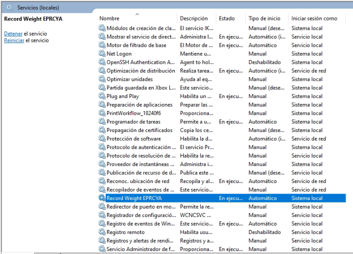
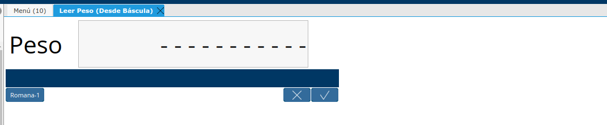

Verificar el funcionamiento del Cliente de Lectura de Peso
Verificar que la Aplicacion este ejecutando la version correcta
Verificar que existe un Servicio de Windows con el Nombre de Record Weight EPRCYA


Para verificar que el servicio funcione, abrir las Propiedades del servicio y presionar el boton iniciar el estado del servicio debe mantenerse En Ejecución, ademas la Ruta de Acceso al Ejecutable debe coincidir con la version instalada.
C:\Users\(Usuario de Windows)\AppData\Local\Record-Weight-Sender-DotNet\rs-1.8-win-x64\Local-Printing-Service-DotNet-win-x64.exe
Verificar que la Romana este enviando datos
Para hacer esto se debe conocer en que puerto COM esta conectada la Romana puedes usar una aplicacion como HyperTerminal o `_XCTU`_ , para leer el puerto Serial.
Para este caso se demostrara como hacerlo usando la aplicacion `_XCTU`_:
Abrimos la aplicacion XCTU.
Selecionar el Puerto Serial, y ajustar la Velocidad de transmisión (Baud)
Ir a la Pestaña terminal y presionar boton Open COM Port si esta funcionando correctamente, podras ver el peso que se obtiene desde la romana en pantalla.

Es importante cerrar el puerto usando el boton Close COM port.
Problemas al momento de leer el puerto Serial
Verificar si el dispositivo esta conectado o encendido.
Verificar que el puerto serial no este ocupado por otra aplicacion.
Verificar que la Velocidad de transmision serial se la correcta.
Verificar que Cliente de Lectura de Peso reciba datos desde el Puerto Serial
Para ello necesitamos ejecutar manualmente la aplicación Record-Weight-Sender-DotNet, es necesario ingresar a la siguiente ruta: C:Users(Usuario de Windows)AppDataLocalRecord-Weight-Sender-DotNetrs-1.8-win-x64
Ubicar el archivo StartPrintService.bat y ejecutarlo.
Se abrira la consola de windows, y mostrara lo siguiente
Waiting...
Topic already exists
Weight=**06812** (6812)
Send to: Romana-1-test
Weight=**03265** (3265)
Send to: Romana-1-test
Weight=**09098** (9098)
Send to: Romana-1-test
Weight=**09337** (9337)
Send to: Romana-1-test
Weight=**01392** (1392)
Send to: Romana-1-test
Lectura de peso: Weight=**Peso Actual** (Peso Actual)
Enviar a cola de impresion: Send to: Romana-1-test
Problemas al momento de leer el puerto Serial
Si al momento de leer el puerto serial muestra un mensaje como el siguiente:
Topic already exists
Stream readed not match: Length(96)=[ 009476= 006473= 006480= 006951= 008470= 005076= 005454= 009694= 003362= 009119= 002792= 005188=]
---------------------------------------------------------
:32|0:48|0:48|9:57|4:52|7:55|6:54|=:61| :32|0:48|0:48|6:54|4:52|7:55|3:51|=:61| :32|0:48|0:48|6:54|4:52|8:56|0:48|=:61| :32|0:48|0:48|6:54|9:57|5:53|1:49|=:61| :32|0:48|0:48|8:56|4:52|7:55|0:48|=:61| :32|0:48|0:48|5:53|0:48|7:55|6:54|=:61| :32|0:48|0:48|5:53|4:52|5:53|4:52|=:61| :32|0:48|0:48|9:57|6:54|9:57|4:52|=:61| :32|0:48|0:48|3:51|3:51|6:54|2:50|=:61| :32|0:48|0:48|9:57|1:49|1:49|9:57|=:61| :32|0:48|0:48|2:50|7:55|9:57|2:50|=:61| :32|0:48|0:48|5:53|1:49|8:56|8:56|=:61
---------------------------------------------------------
Esto significa que la trama de datos no esta correctamente configurada en el archivo scale.yaml para este caso esto puede estar determinado por alguno de los siguientes parametro:
start_character: 60
end_character: 13
start_word: “”
end_word: “”
El mensaje que se muestra en la consola puede ayudar a corregir la situacion.
Datos obtenidos desde el puerto Serial: Stream readed not match: Length(longuitud de trama leida)=[Datos leidos desde el puerto Serial]
Ejemplo:
En la siguiente trama no esta configurado correctamente el caracter de inicio(start_character)
Topic already exists
Stream readed not match: Length(96)=[ 009476= 006473= 006480= 006951= 008470= 005076= 005454= 009694= 003362= 009119= 002792= 005188=]
---------------------------------------------------------
:32|0:48|0:48|9:57|4:52|7:55|6:54|=:61| :32|0:48|0:48|6:54|4:52|7:55|3:51|=:61| :32|0:48|0:48|6:54|4:52|8:56|0:48|=:61| :32|0:48|0:48|6:54|9:57|5:53|1:49|=:61| :32|0:48|0:48|8:56|4:52|7:55|0:48|=:61| :32|0:48|0:48|5:53|0:48|7:55|6:54|=:61| :32|0:48|0:48|5:53|4:52|5:53|4:52|=:61| :32|0:48|0:48|9:57|6:54|9:57|4:52|=:61| :32|0:48|0:48|3:51|3:51|6:54|2:50|=:61| :32|0:48|0:48|9:57|1:49|1:49|9:57|=:61| :32|0:48|0:48|2:50|7:55|9:57|2:50|=:61| :32|0:48|0:48|5:53|1:49|8:56|8:56|=:61
---------------------------------------------------------
En la siguiente linea se ve que datos se estan recibiendo:
Stream readed not match: Length(96)=[ 009476= 006473= 006480= 006951= 008470= 005076= 005454= 009694= 003362= 009119= 002792= 005188=]
Observando atentamente se puede ver que en la trama se repite el siguiente simbolo “=” , por lo tanto este debe corresponder a el caracter de inicio o de finalización, en nuestro caso corresponde al caracter de inicio. Lo siguiente es identificar el valor decimal del carcater ASCII la siguiente linea puede facilitar esto, corresponde al valor decimal de todos los carateres ASCII de la trama:
---------------------------------------------------------
:32|0:48|0:48|9:57|4:52|7:55|6:54|=:61| :32|0:48|0:48|6:54|4:52|7:55|3:51|=:61| :32|0:48|0:48|6:54|4:52|8:56|0:48|=:61| :32|0:48|0:48|6:54|9:57|5:53|1:49|=:61| :32|0:48|0:48|8:56|4:52|7:55|0:48|=:61| :32|0:48|0:48|5:53|0:48|7:55|6:54|=:61| :32|0:48|0:48|5:53|4:52|5:53|4:52|=:61| :32|0:48|0:48|9:57|6:54|9:57|4:52|=:61| :32|0:48|0:48|3:51|3:51|6:54|2:50|=:61| :32|0:48|0:48|9:57|1:49|1:49|9:57|=:61| :32|0:48|0:48|2:50|7:55|9:57|2:50|=:61| :32|0:48|0:48|5:53|1:49|8:56|8:56|=:61
---------------------------------------------------------
Identificar el Caracter se hace de la siguiente manera “|=:61|” a la izquierda se encuentra el Caracter de la trama y a la derecha el valor Decimal del mismo, para corregir se modifica el parametro en el archivo scale.yaml
start_character: 61
Verificar Lectura de Peso en ADempiere
Ingrese al formulario Leer Peso (Desde Báscula)

Selecione una de las Romanas configuradas, inmediatamente mostrara la lectura peso Actual.

Problemas al momento de leer el puerto Serial
Si luego de escoger una de las Romanas se mantiene de la siguiente manera en la ventana:
Eso indico que no se esta recibiendo datos desde la Balanza, se deben prestar atencion a lo siguiente:
El equipo en el que esta instalada la aplicacion, verificar si la misma se esta ejecutando.
La aplicación esta capturando adecuadamente el peso en la terminal.
El equipo en el que esta instalada la aplicacion, posee una conexión a la red local o a internet dependiendo de cual sea el caso.